Civets Knock Off Binturongs
126-119 in Cork Bowl 16; Kevin Ryan Wins 1st MVP Award with 15 reception/5
touchdown game, Truitt Brothers Each Throw 17 Touchdown Passes, Henney Returns
and Sets Career-High with 22 receptions in Defeat
Click Here for Stats
(Click Here
for More Pictures! (thanks
to Joe Trimble and Holly Cork)
Saturday, November 18th - "Cork
Bowl is back." Those four words from Binturongs quarterback Willy Truitt,
following a thrilling game, summed up Cork Bowl 16. "It was just like
the glory days in late 90's and early 2000's," added Truitt. "This
game lived up to all the hype and was one for the ages." After a handful
of somewhat sloppy games over the past five years, Cork Bowl 16 was a crisp,
offensive masterpiece that was not decided until the final drive. In the
end, the Civets were able to hold off the hard-charging Binturongs for a
126-119 victory. It was only the the second time in the 16-year history
of the game that 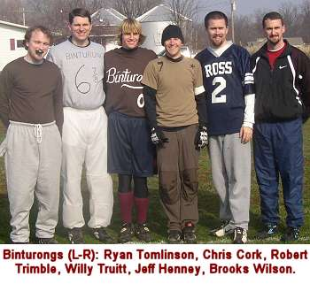 the final score was a seven-point margin. "To play for
100 minutes and have the game decided by one touchdown is pretty amazing,"
added winning quarterback Reggie Truitt. "It shows how evenly matched
the teams were and how well the game was played."
A pair of fan favorites made impressive
returns after long layoffs. Jeff Henney, who was the MVP his rookie year
in Cork Bowl 11, was back after missing the last three Cork Bowls. "After
you've been away for a few years, you start to wonder if you'll ever get
back," beemed Henney. "It never really sunk in until we pulled
up to the stadium and then you realize you're going to be out there playing
in a couple hours in front of a worldwide audience. It's a thrill I can't
put into words." Steve "Colonel" Sanders had been away for
the past four years. "It's awesome. There's no other way to describe
it," added Sanders. "One year ago I was thousands of miles away
from here, but as soon as I stepped on the field it was if I'd never left."
Most pundits had the Binturongs as
slight favorites due to the size and speed of their receivers - including
Willy Truitt's two favorite targets for the past five years in Henney and
Brooks Wilson. The bigger factor in the pregame predictions may have been
focused more on the Civets quarterback, however. Reggie Truitt, who had
not thrown a pass since Cork Bowl 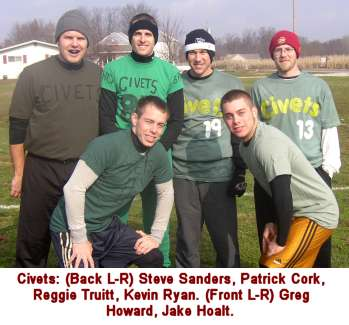 10, was named the starter at the beginning of training camp.
Despite ranking third on the all-time passing list, Reggie had struggled
with interceptions in the past - throwing 16 in his career. The game started
almost prophetically with the Civets struggling out of the gates on their
first possession. After a pair of incomplete passes put them in a third
and long situation, Reggie tried to force a ball to Greg Howard down the
sidelines that was intercepted by Jeff Henney and returned to midfield (VIDEO). Four
plays later the Binturongs were on the board first with a Brooks Wilson
touchdown reception. "We talked before the game about not giving them
any easy points," recalled Civets receiver Patrick Cork. "We wanted
to march down and score early and make them play from behind. The game couldn't
have started worse for us, but we still had 95 minutes to play."
The Civets responded quickly with
a two-play drive capped off by an 8 yard Patrick Cork touchdown to tie the
game at 7-7. The Binturongs moved the ball inside the 5-yard line, but on
2nd and goal, Willy's pass for Robert Trimble in the corner of the endzone
was deflected and intercepted by Greg Howard who raced down the sideline
past midfield and the Civets had 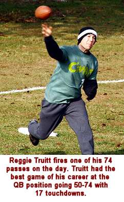 regained their lost possession back (VIDEO). "It's so important to get back lost
possessions quickly," said Howard. "You hate to be playing from
behind all day. I had a good read on the pass and got a hand on the ball
and fortunately was able to keep myself in bounds." The interception
was just the second one in Willy's past 185 attempts. The turnover led to
another quick Civets touchdown - again to Patrick Cork - and they had their
first lead of the game at 14-7. They would never trail again. On the drive,
the Civets suffered a scare as star receiver Greg Howard went down with
a severely sprained ankle. "I thought I was done," added Howard.
"I heard a pop and dropped to the ground. When I realized it wasn't
broken, there was no way I was going to stay out of the game." "We
all thought Greg was done for the game when he first got hurt," said
Patrick. "Of all the players for us to lose, Greg was probably #1 on
the list due to his defense and being in such good shape. He toughed it
out and ended up playing a darn good game considering how much pain he was
in."
The pressure suddenly swung to the
Binturongs, and was even greater as they were faced with a 4th and 12 scenario.
But in what would become the theme of the game for both teams, they converted
on a 20 yard completion to Wilson and later scored on a 4th down, 1 yard
touchdown pass to Ryan Tomlinson to tie the score at 14-14. 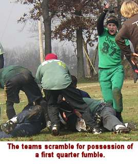 After an incomplete
pass to start the drive (another theme of the game for the Civets), Reggie
connected three consecutive times, capped off by a 6 yard touchdown grab
by Greg Howard to take a 21-14 advantage. With just over a minute to go
in the opening quarter, Jeff Henney caught a short pass and appeared to
turn it into a big play as he broke several tackles and forced his way into
Civets territory, but Reggie Truitt knocked the ball loose and dove on the
fumble in what turned out to be the only somewhat controversial play of
the game (VIDEO).
Truitt appeared to have possession of the ball, but couldn't come out of
the pile beause the ball was still under Henney's legs. "It was visible
on the tape that Reggie dove on the ball and had it before Wilson dove in
and caused the big pile up," responded announcer Tony Cork. "If
Reggie had the ball, and Wilson dove on him, then he's down by contact and
it doesn't matter who has possession after that. I'm pretty sure the ruling
on the field would have held up if we had instant replay."
The Civets held a slim 21-14 lead
after the first quarter of play. After a shaky start, Reggie Truitt calmed
down to go 8-for-16 with 3 touchdowns. Willy Truitt was 11-for-18 with 2
touchdowns. Each was picked off one time. Henney led all receivers with
4 first quarter receptions, and Patrick Cork and Brooks Wilson each had
3. "I thought we would be fortunate to get out of the quarter tied
after the first drive," recalled Patrick. "Not only did we have
the lead, but we had the ball and a chance to go up two scores. We were
hoping to get maybe one or turnovers in the game, but we got a pair in the
f 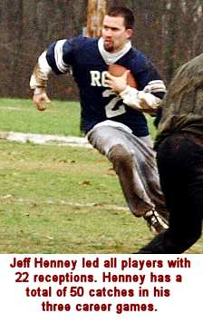 irst
25 minutes which gave us a ton of confidence."
The second turnover of the first frame
eventually led to a Civets touchdown by Steve Sanders to start the second
quarter, but only after a big 22-yard catch on fourth down from Howard to
keep the drive alive. The touchdown gave the Civets the first two-score
lead of the game at 28-14. Willy answered back going 4-for-5 and hitting
Henney for his first score of the game to bring the lead down to 28-21,
but Reggie went 4-for-5 on the next drive, including another 4th down completion
to Patrick Cork. Jake Hoalt finished the drive with a 5 yard leaping catch
in the endzone to make the score 35-21. Again, Willy marched the Binturongs
quickly down the field, executing their no-huddle offense to perfection.
Wilson scored from three yards out to bring the lead back to one score at
35-28. Kevin Ryan caught two passes on the next drive, including an 8 yard
score, but Willy, using only Henney and Trimble on the next possession,
completed an 11-yard strike to Trimble to keep the game close at 42-35 (VIDEO).
Reggie continued to stay sharp as
he completed 4-of-5 passes, and Patrick Cork scored his third touchdown
of the half, and 60th of his career, on fourth down from the one yard line
to give the Civets a 49-35 advantage with under 2 minutes to go. Trimble
caught his second touchdown pass in as many possessions with one minute
to go to cut the lead to 49-42. "At that point, we were in desperate
need of a stop," remarked Willy. "We were getting the ball to
start the second half, so if we could hold them on their final possession,
we would have a shot to tie the game to start the second half. 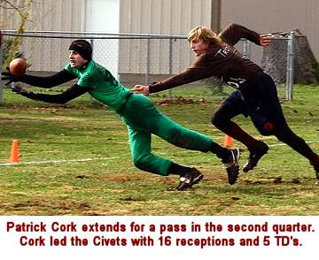 However, the exact
opposite happened."
On the Civets first play from scrimmage,
Reggie found Kevin in the right flat, and he was able to tip-toe the sidelines
and go the length of the field for a 36-yard touchdown to move the score
to 56-42 with 50 seconds to play (VIDEO). In hurry-up mode, the Binturongs quickly
marched the ball inside the 10 yard line with 30 seconds to play, but Willy
made his second mistake of the day as he tried to force a pass into Henney
in the endzone. Patrick Cork jumped the route and returned the interception
39 yards for a score, but in the meantime managed to run the clock out on
the half by not going into the endzone until time had expired (VIDEO). "Once
I got past Willy there was nobody else chasing me," said Patrick. "There
were about 20 seconds left on the clock when I got close to the goal line,
but I didn't want them to have another possession so I ran the clock out.
I was on defense last year when the Earwigs went the length of the field
with 5 seconds to go in the first half 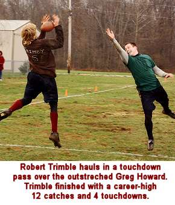 and I didn't want to give them that opportunity. Nobody ever
came after me so I waited at the one yard line until the buzzer sounded.
There have been a number of Cork Bowls decided by what happens in the final
minute of the first half and this was another one."
The defensive score vaulted the Civets
to a 63-42 halftime advantage. It was the first interception return for
a touchdown in Cork's career. "We were one play away from leading by
seven at halftime, and the Binturongs having the ball to start the third
quarter, but suddenly we were up 21," said Greg Howard. "Not only
did it have a huge impact on the momentum of the game, I think it deflated
them a little bit going into halftime. Three scores is a lot to make up
in this game."
The Truitt brothers were both red-hot
in the second frame with Reggie going 15-for-19 with 5 touchdowns and Willy
completing 15-of-21 passes for 4 touchdowns, but had the big interception
late. Henney led all players again with 7 catches in the quarter and 11
receptions in the first half. Kevin Ryan began his quest for his first ever
MVP award with 6 catches and 2 touchdowns. He led the Civets with 8 first
half receptions. Patrick Cork had 7 catches and 3 touchdowns, while Brooks
Wilson had 7 catches and 2 scores. Of the fifteen first half touchdowns,
only one was over 11 yards, and seven were 5 yards or less. "Both teams
did a really good job tackling and not allowing big plays in the first two
quarters," recalled Reggie. "Neither of us could get that big
downfield play." 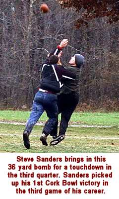
The Binturongs began the third quarter
with the ball and took just three plays to score on a Henney 6 yard touchdown
reception to make the game 63-49, but the Civets went deep on the second
play of the ensuing drive as Reggie found Sanders on a bomb down the right
sideline to push the lead back to three scores at 70-49 (VIDEO). Both
teams scored on big fourth down receptions as Wilson hauled in a 4th-and-goal
pass from the 6 yard line for the Binturongs and Patrick Cork turned a 4th-and-10
completion into a 26 yard touchdown on a nice catch and run to make the
score 77-56 despite being held, mugged and assaulted by Wilson on the play
(VIDEO).
"What Brooks did to Patrick on that play in coverage is against the
law in all 50 states and Canada," recalled announcer Tony Cork. A pair
of Wilson catches moved the ball deep inside Civets territory where Willy
found Trimble for his third touchdown of the game to cut the lead to 77-63,
but the Civets answered thanks to yet another 4th-and-10 completion to Patrick
Cork for a first down. On the next play, Howard scored for the second time
from 14 yards out to move the score to 84-63 in what was a fast and furious
third quarter of play.
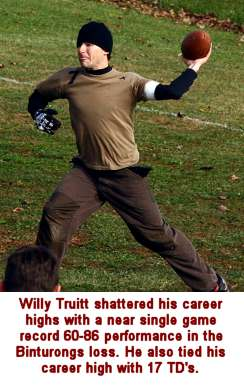 Willy
Truitt stayed hot as he connected on four straight passes and found Tomlinson
in the endzone from 1 yard out to make it 84-70 with less than 5 minutes
to play in the period. The Civets converted once again on a big fourth down
play as Reggie found Jake Hoalt across the middle on 4th-and-5, and Hoalt
fought off Chris Cork and stretched the ball just across the goal line for
his second score of the day, and the lead was 91-70 (VIDEO). On his best stretch of the game, Willy
completed three more passes in a row (making him 11-for-his last 12) and
a 10 yard touchdown to Trimble to make the game 91-77. The Binturongs finally
got the defensive play they needed as Reggie tried to go deep to Sanders
again, but his pass was underthrown in the endzone and intercepted by Wilson
for a touchback to end the third quarter (VIDEO).
"We had a long discussion at
halftime on what we had to do to win the game," recalled Willy Truitt.
"We knew we had to score every time we had the ball and we had to find
some way to get a turnover and another stop. We scored on all five of our
possessions and got our turnover right at the end of the quarter so we were
halfway to where we needed to be." 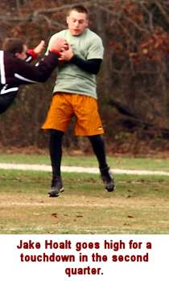
Willy Truitt was outstanding in the
third quarter, going 16-for-21 with 5 touchdowns and completed his final
8 passes. Reggie was just 9-for-17 with an interception, but was able to
lead his team to 4 touchdowns to keep the Civets up by two scores. Wilson
caught 6 passes and Trimble caught 5 passes in the quarter, with Trimble
scoring twice.
With new life, Willy hit Trimble on
a nice catch and run for 32 yards and hit Chris Cork on a 4 yard pass for
the score on the next play to cut the lead to one with 23 minutes to play
at 91-84 (VIDEO).
The Civets moved the ball down the field going back and forth to Kevin and
Patrick, capping the drive with another 4th down conversion on a one-yard
touchdown to Kevin to make the score 98-84, but the Binturongs responded
quickly again with their no-huddle offense on a 6 yard touchdown to 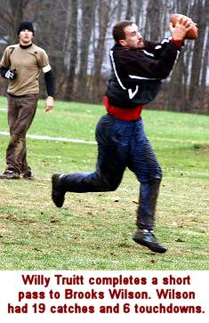 Wilson to bring
the game back to a one possession game (98-91) (VIDEO). With the pressure on once again, Reggie
responded with three straight completions to Sanders, Patrick and Kevin
as Kevin turned his short catch into a 16 yard touchdown putting the Civets
into triple digits at 105-91 (VIDEO).
The fourth quarter was turning into
a scoring frenzy as Willy needed just two passes to put his team in the
endzone on a hard-fought catch and run by Henney (105-98) (VIDEO), but as
was the case all game long, Reggie responded with a two play drive of his
own capped off by a beautiful catch and run by Greg Howard on the right
sideline as Howard was able to tip-toe the sidelines, fight off a defender
and get into the endzone for the third time in the game (VIDEO).
With under 10 minutes to go, and the
score 112-98, the Binturongs were running out of time and were in hurry-up
mode the rest of the way. Two more completions to Henney set up a 9 yard
touchdown strike to Wilson to cut the lead in half to 112-105 (VIDEO), but the
Civets responded with a crisp five-play drive that ended with a 10-yard
shovel pass to Kevin Ryan - his third touchdown of the fourth quarter -
putting the Civets up 119-105. Willy hit Henney three more times on the
next possession, including a one-yard touchdown to make the score 119-112,
but they needed one stop to have a shot at tying the game. 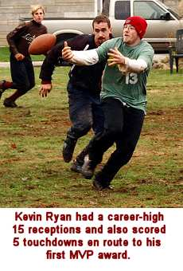
Reggie hit Sanders for 15 yards on
first down to get the ball near midfield, and the Binturongs used their
first timeout to stop the clock with just over 2 minutes remaining. Needing
a touchdown to put the game out of reach, the Civets ran a play they had
been waiting to run all game as Reggie pumped to his left and came back
to his right to Patrick who had broken free on a double move, and Patrick
made a diving grab in the endzone (VIDEO) for what turned out to be the game clinching
score (126-112). The Binturongs needed a quick score and a turnover, but
struggled to move the ball for the first time in the second half before
eventually finding Wilson for a one-yard score on 4th down, but the drive
took seven plays 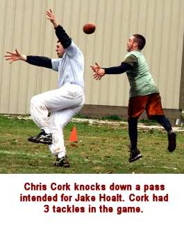 and nearly 1:30 came off the clock.
"We knew they were probably going
to score, but we had to make them earn it," said Patrick. "We
were in a very conservative defense, and were letting them complete short
passes because the clock was on our side. They got their score, but they
took a lot of time to get it."
With only one timeout remaining and
just 39 seconds on the clock, the Civets needed to complete just two passes
to keep the clock moving to secure the win. A short pass to Sanders and
a 10-yarder to Patrick sealed the game as the Civets held on for the 126-119
win. "Any time you have a game come down to the final possession, it's
exciting," said Willy Truitt. "Unfortunately we came up on the
short end, but we had a chance to win going into that last drive if we could
have forced a couple incomplete passes or a turnover."
In what turned out to be the highest
scoring quarter of the game, the two teams combined to score 77 points in
the final frame as both quarterbacks had their best 25 minutes of the game.
Willy Truitt was 18-for-26 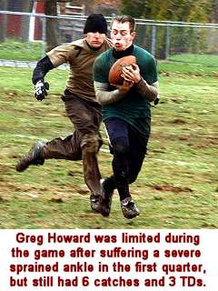 with 6 touchdowns in the quarter. He was nearly perfect in
the second half completing 29-of-47 passes for 11 touchdowns and no interceptions.
Reggie was equally effective in the fourth quarter completing 18-of-22 passes
for 5 touchdowns, including 14 of his final 16 passes to clinch the win.
The big numbers from the quarterbacks meant big numbers from the receivers
as five players caught at least 5 passes in the quarter. Jeff Henney capped
off an impressive return with 8 catches and 2 scores in the period and Brooks
Wilson caught 6 passes and scored 3 times. Patrick Cork and Kevin Ryan each
caught 5 in the fourth quarter, as Kevin scored 3 times. Steve Sanders also
had 5 receptions in the period.
After having nearly all of the scores
coming from inside ten yards in the first half, the Civets made some halftime
adjustments and took a few more chances that resulted in big scores. Only
one of their 11 second half touchdowns was less than 10 yards, and five
of the scores were from 20+ yards. "We had run so much short stuff
that we thought the deep ball would be open," said Reggie Truitt. "We
got a couple big plays down the field that helped take away any momentum
they may have had." After having three turnovers in the first half,
the Binturongs were perfect in the second half scoring on every one of their
11 second half possessions. "We needed two stops in the second half
and we only got one (on the interception)," recalled Henney.
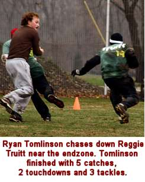 Four
players had career highs on the day, including all-time leading passer Willy
Truitt who shattered his career bests going 60-for-86 with 17 touchdowns
and 2 interceptions. Truitt's previous career highs were 46 / 77 / 17. He
threatened the single-game records of 62 completions and 92 attempts set
by Kirby Newell in Cork Bowl 14. "I would trade half of those completions
away in order to take those two interceptions back," thought Truitt.
"I've prided myself on not making mistakes and I made two today. I'm
used to being a little more of a gunslinger back there and throwing the
ball deep, but they were playing a deep safety and making us complete three
or four passes every drive to score. It resulted in a lot of numbers, but
we came up just short."
Reggie Truitt didn't quite match his
career bests, but had his most effective game at quarterback of his career
finishing 50-for-74 with 17 touchdowns and 2 interceptions. In his last
three games at quarterback, Truitt had been picked off 11 times. After being
intercepted on the third play of the game, Truitt was picked off just one
time in his final 70 attempts. "You can't win this game if you turn
the ball over," said Truitt. "I was a little anxious to make a
play early and that cost us, but I settled down and trusted my receivers
to make plays and more often than not, 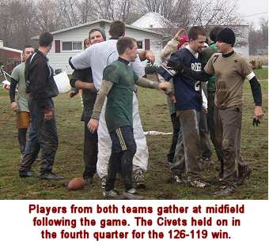 they did."
Jeff Henney led all players with a
career-high 22 receptions, and scored 4 times. "Henney was an animal
out there today," said Willy. "He battled all day and took a lot
of hits but he never backed down. In my opinion he was the best player on
the field. Had we won, there is little doubt he would have been the MVP."
Brooks Wilson hauled in 19 passes and scored 6 touchdowns and Robert Trimble
had career highs with 12 receptions and 4 touchdowns. Ryan Tomlinson had
5 catches and 2 touchdowns and Chris Cork caught 2 passes and scored once.
The Civets game plan was run to near
perfection, and resulted in an unexpected MVP for the second consecutive
year. Robert Trimble shocked everyone with his MVP performance in the snow
in Cork Bowl 15, and Kevin Ryan turned in the best game of his 11-year career
this year in the mud. Kevin had a career-high 15 catches and scored five
touchdowns - three of which came in the fourth quarter. The Civets strategy
prior to the game was to use Kevin strictly on offense and allow him to
rest all game while they were on defense. Other than about a dozen plays 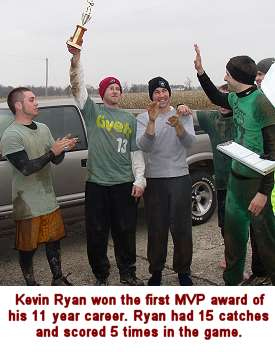 where Kevin played
defense, he spent nearly half the game resting on the sidelines. "We
needed to have Reggie, Jake and Greg on the field on defense the whole game,
and with me playing safety, it allowed us to get Kevin a lot of rest,"
added Patrick. "When you have a big, bruising tight end like him you
want to have him fresh for the fourth quarter and he obviously was."
"It's never a goal of mine to win MVP coming into a game," stated
Ryan. "You always want to win the game first and not worry about individual
stuff, but I thought I had an opportunity to have a lot of catches this
year with the game plan Reggie and Patrick put in."
Patrick Cork led the Civets with 16
receptions and 5 touchdowns, including five receptions on fourth down plays
that resulted in a first down or touchdown. "Patrick was my go-to guy
when we needed a big catch," said Reggie. "It seemed like every
time he caught a pass it was at a key point in the drive." Steve Sanders
came on strong in the fourth quarter finishing with 10 catches and 2 touchdowns.
Greg Howard battled through his ankle injury over the final 3 1/2 quarters
and finished with 6 catches and 3 touchdowns, while Jake Hoalt had 3 catches,
scoring on two of them.
Defensively, the Binturongs were led
by Robert Trimble's 12 tackles. Brooks Wilson had 9 tackles and an interception
and Jeff Henney had 5 tackles with an interception. Chris Cork and Ryan
Tomlinson each had 3 tackles and Willy Truitt had 2. The Civets put three
players in double figures in tackles led by career leader Reggie Truitt's
13. Steve Sanders also had a career-high with 13 tackles and Greg Howard
had 10 tackles and an interception. Jake Hoalt finished with 8 tackles,
Patrick Cork had 4 tackles and an interception for a touchdown, and Kevin
Ryan had 2 tackles.
In one of the most amazing stats in
Cork Bowl history, neither team was stopped on downs the entire game. "I'd
have to check the record books to be sure, but I've played in 16 of these
games and I can't remember that ever happening to one team, let alone both,"
recalled Patrick Cork. 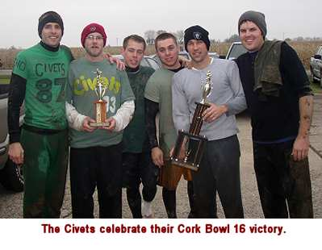 It wasn't due to lack of opportunities either. The Civets
were 8-for-8 on fourth down conversions in the game and the Binturongs were
6-for-6. "That may be the stat that best defines this game," added
Willy Truitt. "Time and time again both teams were put in positions
where they had to make a huge play and we converted every single time. It's
one of the more unbelievable stats I've seen in a football game. Some would
say it was poor defense, but I think the offenses were so good this year
that it didn't matter what the defense did." Each team had 20 possessions
in the game and scored 17 offensive touchdowns apiece. The defensive touchdown
by Patrick Cork to end the first half turned out to be the difference.
In another hard-to-believe stat, the
Civets struggled mightily on first down all game long. On the first play
of possessions, they completed just 10-of-20 passes, compared to 15-for-20
for the Binturongs. "It's kind of hard to believe we put ourselves
in such a deep hole to start out half our drives, but it shows how mentally
strong our team was," said Greg Howard. Taking away the 10-for-20 on
first down plays, Reggie Truitt only threw 14 incomplete passes the rest
of the game. He was a mind-boggling 40-for-54 (74.1%) on passes other than
the first play of a drive.
After missing four years, and losing
his only two games, Steve Sanders was elated after the win to get his first
championship ring. "It's a feeling that nobody can describe,"
beemed Sanders, who refused to let go of the trophy for over an hour after
the game. "All the hard work and preparation pays off in the end. I've
never been to Disneyland, but I don't want to go there right now. I want
to do what every championship winning football player does - I want to be
on "Dancing with the Stars."
Cork Bowl 16 Game Notes:
Patrick Cork's 6 touchdowns give
him 63 for his career and his 16 catches brought his career total just six
shy of 200 with 194....Brooks Wilson's 19 catches moved him from 7th all
the way to 4th on the all-time list with 88 receptions....Greg Howard's
10 tackles gives him 97 in his career, moving him up to #2 all-time behind
only Reggie Truitt who has 116...Willy Truitt's 17 touchdown passes brings
his career total to 135 (Tony Cork is second with 71)....Kevin Ryan now
has 32 career touchdowns which ranks him 4th all-time....Reggie Truitt's
forced fumble brought his career turnover mark to 15 (13 interceptions,
2 forced fumbles - he leads Patrick Cork (8 interceptions, 6 forced fumbles)
by one on the all-time list....Jeff Henney now has 6 interceptions in just
3 career games
(Click Here for
More Pictures!)
Back to top
Cork Bowl 16 Stats
Back to Cork Bowl |